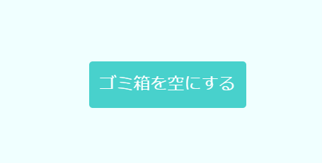
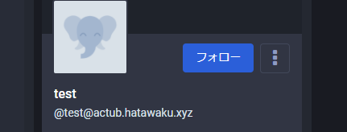
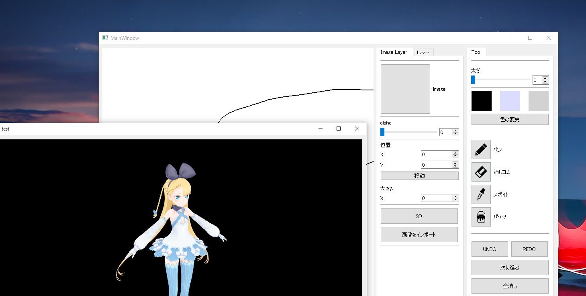

WORKS


ウェブサイト
- Social Trashbox
- 誰でも投稿可能、誰でも削除可能なテキストのゴミ箱。gin、Box2D、CreateJSで製作。

GitHub
- ActubAccount
- ActivityPubで認識可能なアカウント。Go/ginで製作。

- Paint
- 大学の共同開発で製作した絵の練習用ペイントソフト。主にキャンバスの描画と3Dモデル表示を担当。C++/Qtで製作。公開準備中。